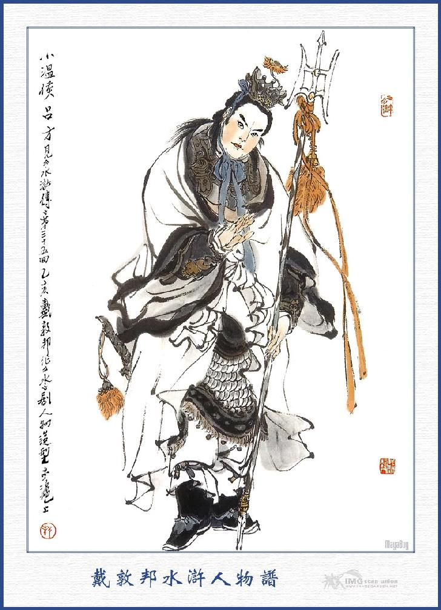
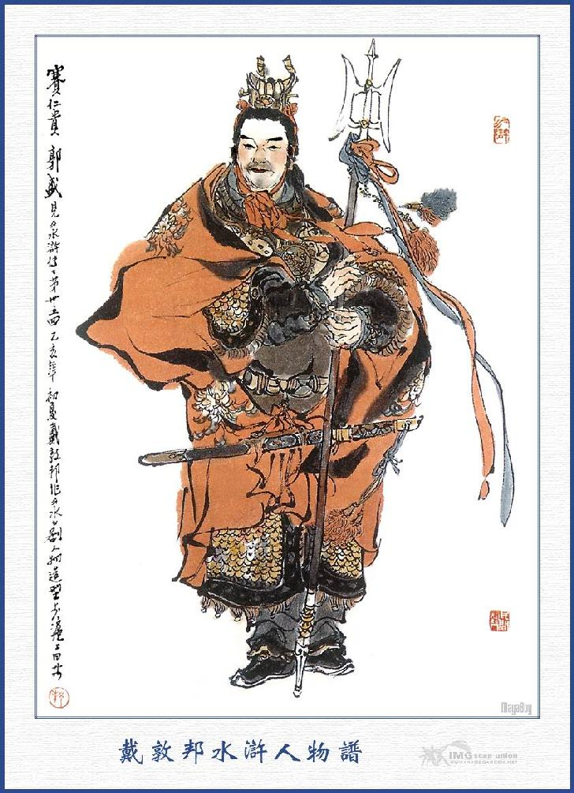
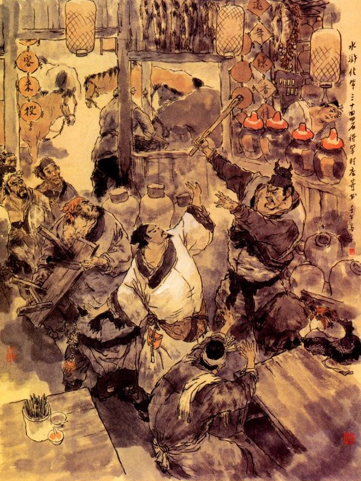
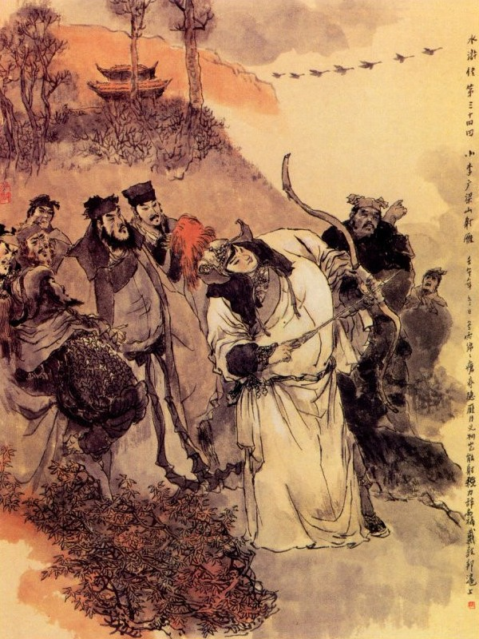
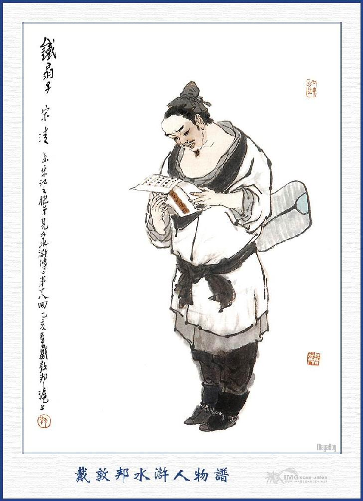

Bấy giờ Tần Minh cùng Hoàng Tín đi ra cổng trại, trông thấy hai đường quân mã rất đông, một đường là Tống Giang với Hoa Vinh, đường là Yến Thuận, Vương Nụy Hổ, đều dẫn hơn một trăm người kéo đến. Khi tới nơi, Hoàng Tín vội mở cổng trại, bỏ đích kiều xuống, để đón hai đường binh mã cùng vào trong trại. Tống Giang truyền lệnh cho bọn lâu la, không được giết hại một người dân và một người lính nào trong trại đó. Lại truyền cho vào trại bên Nam, bắt hết cả nhà Lưu Cao để giết. Vương Nụy Hổ được lệnh ấy, vội vàng đến đó cướp lấy vợ Lưu Cao, cùng các thứ kim ngân tài vật, lừa ngựa trâu dê thì giao cho đám lâu la thu nhặt để tải về. Hoa Vinh trở về nhà thu dọn các đồ đạc. Công việc thu xếp đâu đấy yên ổn rồi, mấy vị hảo hán cùng nhau dóng ngựa áp tải các đồ vật mà trở về sơn trại.
Khi về tới sơn trại, Vương Nụy Hổ vội đem vợ Lưu Cao dấu vào trong tư phòng, Yến Thuận thấy vậy liền hỏi rằng:
- Con đàn bà đê tiện ấy đem đi dấu làm gì?
Vương Nụy Hổ đáp rằng:
- Phen này đã bắt được về tới đây, xin để cho tôi làm phu nhân áp trại.
Yến Thuận nói:
- Đành rằng để cho bác làm phu nhân áp trại, song hãy đem ra đây cho tôi hỏi đã.
Tống Giang bảo với mọi người rằng:
- Chính tôi cũng đương muốn hỏi chuyện nó, xin hãy đem ra đây.
Vương Nụy Hổ vâng lời, cho gọi chị chàng ra trước cửa sảnh. Chị chàng kia khóc lóc kêu van, xin tha tính mạng. Tống Giang quát lên rằng:
- Giống gian dâm này, còn nỉ non về nỗi gì nữa? Ta nghĩ mày là một người vợ con nhà quan, nên mới cứu cho thoát nạn, ai ngờ mày đem lòng tàn ác mà toan hại ta. Đồ vong ân bội nghĩa thì trời đất nào dung thứ được!
Yến Thuận đứng phắt dậy nói rằng:
- Giống dâm phụ ấy, còn hỏi làm gì nữa?
Nói đoạn rút dao lưng ra, chém cho một nhát ngã gục xuống đó.
Gươm vàng pha vị tanh hôi,
Máu hồng nhuộm máu con người bạc đen.
Thế gian nhắn bạn thuyền quyên,
Ở đời liệu thói đảo điên nên chừa.
Vương Nụy Hổ thấy vậy, trong lòng lấy làm tức giận vô cùng, liền vớ một thanh dao, toan đánh nhau với Yến Thuận. Bọn Tống Giang đứng dậy vội vàng giữ lại, khuyên bảo Vương Nụy Hổ rằng:
- Yến Thuận giết đứa dâm phụ ấy là phải lắm. Bác phải biết rằng tôi hết sức cứu nó, cho vợ chồng lại được đoàn tụ với nhau, thế mà nó còn trở mặt xui chồng toan hãm hại tôi, con người như thế nếu để về sau, tất là nguy hiểm. Vậy sau đây tôi xin tìm cho bác một người rất là xứng ý, đừng nên nghĩ đến con người ấy làm chi!
Yến Thuận cũng bảo Vương Nụy Hổ rằng:
- Nếu anh còn muốn để con đàn bà ấy về sau, tất nhiên có phen nó lại hại chứ không chơi.
Vương Nụy Hổ bị can như vậy thì nín lặng không biết nói làm sao được. Yến Thuận gọi lâu la khiêng bỏ xác, rửa sạch huyết tính rồi, lại sai dọn tiệc ăn mừng. Ngày hôm sau, Hoa Vinh mời Tống Giang, Hoàng Tín làm chủ hôn, Yến Thuận, Vương Nụy Hổ và Trương Thanh làm nhà mối, để làm lễ thành hôn cho em gái lấy Tần Minh. Bao nhiêu lễ vật đều tự Hoa Vinh xuất tiền mãi biện. Đoạn rồi cùng nhau ăn uống vui chơi ba bốn ngày rất là thoả thích. Cách năm bảy hôm thấy lâu la đi thám sự về báo rằng:
- Quan Phủ Mộ Dung hiện đã đệ công văn lên phủ Trung Thư, tâu rõ về việc Hoa Vinh, Tần Minh, Hoàng Tín làm phản và xin đại đội binh mã nay mai đánh dẹp núi Thanh Phong.
Các vị hảo hán nghe cả kinh, liền cùng nhau bàn định mưu kế để cự địch quân quan, Tống Giang nói với chúng rằng:
- Ở đây là một nơi sơn trại, tầm thường, lỡ ra quan quân kéo đến thì cũng khó lòng cự địch. Vậy tôi có một kế này, chẳng hay các ngài có ưng thuận thế chăng?
Mọi người đều nói rằng:
- Huynh trưởng có kế gì xin cứ nói cho nghe.
Tống Giang nói:
- Gần đây có một nơi là Lương Sơn Bạc, bên trong có thành Uyển Tử, có vũng Liên Nhi, dài rộng tám trăm dặm. Hiện có Tiều Thiên Vương tụ rất đông quân ở đó, quan quân không hề dám xâm phạm đến nơi. Vậy chúng ta đến đấy nhập bọn thì có lẽ tốt hơn.
Tần Minh nói:
- Nếu được những chốn như thế thì còn gì hơn nữa! Nhưng bây giờ không có ai quen biết mà tiến dẫn ta lên thì có khi nào họ chịu nhận.
Tống Giang cả cười liền đem chuyện Tiều Thiên Vương cướp lễ sinh nhật, cho đến khi đưa vàng tạ ơn rồi đến nỗi xảy ra chuyện giết hại Diêm Bà Tích, lênh đênh lưu lạc giang hồ, thuật lại cho mọi người nghe. Tần Minh nghe nói cả mừng đáp rằng:
- Nếu vậy Huynh trưởng là Đại Ân Nhân của bọn họ thì còn ngại chi đến chuyện kia khác, ta nên mau mau thu xếp đi ngay, kẻo chậm trễ tất nhiên lỡ việc.
Nói đoạn, chúng lập tức sắp mười mấy cỗ xe và cộng có hai ba cỗ ngựa tốt đều để tải đi. Còn đám lâu la kẻ nào không muốn theo thì cho tiền nong đi tìm chủ khác, kẻ nào muốn theo thì biên vào sổ quân. Bấy giờ tính cả quân lính của Tần Minh đem đến, cộng được hơn bốn năm trăm người chia làm ba đội, đều giả dạng quan quân đi đánh Lương Sơn Bạc. Khi thu xếp xong đâu vào đấy, các hảo hán đều đốt bỏ sơn trại, chia làm ba đội, Tống Giang cùng Hoa Vinh dẫn bốn năm mươi tên lâu la và bốn mươi tên kỵ mã, hộ tống năm bảy cỗ xe đi trước. Tần Minh Hoàng Tín dẫn tám chín mươi quân ngựa, cùng mấy cỗ xe đi đội thứ nhì, Yến Thuận, Vương Nụy Hổ cùng Trương Thanh, dẫn bốn năm mươi cỗ ngựa và hơn hai trăm lâu la đi đội thứ ba, trông chừng thẳng trỏ Lương Sơn Bạc. Trong khi đi đường, các cờ hiệu, đều rõ là quan quân đi đánh giặc, vì thế mà không ai dám ngăn trở đường đi.
Đường đi được năm bảy ngày, một hôm Tống Giang cùng Hoa Vinh cưỡi ngựa đi trước, bọn quân mã áp tải người nhà đisau, cách ước hai mươi dặm đường. Khi đến một nơi gọi là Đối Anh Sơn, có hai tòa núi ở hai bên, khoảng giữa là một khu đất rộng phẳng, chợt nghe trong núi có tiếng thanh la đánh ầm cả lên. Hoa Vinh thấy vậy bảo với Tống Giang rằng:
- Chỗ này chắc có cướp bóc ra ngăn đường, ta phải phòng bị chống cự mới được.
Nói đoạn liền cắp gươm vào nách, lấy cung tên ra, sắp sửa cẩn thận rồi nhất diện sai quân kỵ thôi thúc hai toán xe ngựa đằng sau, kéo lên đóng vào một nơi. Đoạn rồi Hoa Vinh cùng Tống Giang dẫn hơn hai mươi tên quân kỵ đi thám thính đường lối. Đi được già nửa dặm đường, chợt thấy phía trước mặt có một toán quân mã ước hơn trăm người, mặc toàn áo đỏ giáp đỏ, có một người tráng sĩ mặc áo đỏ, hoành tay kích ngồi trên mình ngựa quát to lên rằng:
- Hôm nay ta quyết cùng người một trận, xem ai được ai thua?
Đoạn rồi thấy đằng sau núi, trông thấy ước một trăm nhân mã, đều mặc áo trắng giáp trắng, cầm thiên phương họa kích cưỡi ngựa đi trước. Đôi bên cờ trắng đỏ phất phới, chiêng trống vang lừng hai bên tráng sĩ cũng đương kích, xông ngựa lẳng lặng ra giữa khoảng đất rộng, đánh nhau tới hơn ba mươi hiệp, chưa ngã được thua. Hoa Vinh cùng Tống Giang ngồi trên mình ngựa nom ra, liền lắc đầu khen ngợi luôn mồm. Sau Hoa Vinh đánh ngựa đi gần đến chỗ đánh nhau, thấy hai tráng sĩ đương hăng hái ra sức, hai cây kích loáng nhoáng như hai cành phan bị gió thổi rồi bỗng dưng hai cái ngù ở trên đầu kích, quấn chặt lấy nhau, không sao mà gỡ ra cho được.
Hoa Vinh ngồi trên mình ngựa thấy vậy thì liền cầm cương ngựa lại, tay tả vớ lấy cây cung trong túi Phi Ngư, tay hữu vớ lấy một mũi tên trong Tẩu Thú rồi đặt tên lên cung, giang tay thẳng cánh, nhằm giữa mối hai cái xoắn vào với nhau mà bắn ra một phát đứt hẳn làm đôi, tung đôi kích ra mỗi đằng một ngả. Bọn hơn hai trăm người trông thấy thì vỗ tay reo ầm cả lên. Hai tráng sĩ cũng dừng tay kích, quay ngựa xông đến trước mặt Hoa Vinh, đều cúi chào mà xin hỏi tên người bắn giỏi. Hoa Vinh trỏ vào Tống Giang mà nói rằng:
- Người nghĩa huynh tôi đây là Cập Thời Vũ Tống Công Minh là Áp Ty ở huyện Vận Thành khi trước. Còn tôi đây là Tiểu Lý Quảng Hoa Vinh làm Tri Trại ở trấn Thanh Phong.
Hai tráng sĩ nghe nói, vội vàng nhảy xuống ngựa, bỏ tay kính ra rồi lạy lấy lạy để mà nói rằng:
- Chúng tôi được nghe tiếng đã lâu.
Tống Giang cùng Hoa Vinh xuống ngựa, đỡ hai người dậy mà hỏi rằng:
- Xin hỏi cao tính đại danh của hai vị tráng sĩ?
Người mặc áo hồng đáp:
- Chúng tôi họ Lã tên Phương, người ở Đàm Châu, bình sinh chỉ thích theo đòi như Lã Bố, nhân tập đánh cây thiên phương họa kích rồi ai cũng gọi tên là Tiểu Ôn Hầu Lã Phương. Sau nhân đi bán thuốc tới đất Sơn Đông, bị thua lỗ mất cả tiền nong, không thể nào trở về cố hương được, đành phải tạm trú ở đây, để kiếm ăn về nghề ăn cướp bóc. Dè đâu có một tráng sĩ này ở đâu mới dẫn đến, muốn cướp lấy sơn trại của Lã Phương, Lã Phương muốn dàn xếp cho mỗi người một núi mà tráng sĩ nhất định không nghe, bởi thế hai bên đánh nhau kể đã mấy hôm nay, chưa ai chịu nhường nhịn ai cả.
Tống Giang lại hỏi tên họ người mặc quần áo trắng.
Người kia nói rằng:
- Chúng tôi họ Quách tên Thịnh, người ở Gia Lăng thuộc Tứ Xuyên, trước đây có học võ nghệ của Trương Đề Hạt đất Gia Lăng, luyện được cây kích tinh thạo, người ta thường gọi là Kiển Nhân Quý Quách Thịnh. Nhân trước đi buôn thủy ngân đắm thuyền hết vốn, sau nghe nói ở Đối Anh Sơn đây có người đánh kích rất giỏi, mới đến chiếm sơn lâm để cướp bóc kiếm ăn, bởi vậy muốn qua đây thử ngón xem sao? Dè đâu, cùng nhau đối địch luôn mấy ngày cũng chưa phân được thua. Nay cũng là sự bất thình lình gặp được hai ngài ở đây, thực là hạnh phúc.

LÃ PHƯƠNG

QUÁCH THỊNH
Tống Giang nghe nói, lấy làm vui mừng, liền đem chuyện mình nói cho hai người biết và lại bảo rằng:
- Cũng là dịp may mà tôi được gặp hai vị ở đây, vậy tôi muốn khuyên cho đôi bên hòa giải, chẳng hay các ngài có bằng lòng không?
Hai người đều cả mừng mà vâng lời.
Bấy giờ mấy đội nhân mã ở đằng sau cũng vừa tới đó, Tống Giang cùng Hoa Vinh dẫn hai người, để tiếp kiến mấy vị hảo hán kia, đoạn rồi Lã Phương mời lên núi để tiếp đãi. Ngày hôm sau Quách Thịnh cũng mời sang núi để làm rượu khao mừng.
Tống Giang liền bàn vói hai người, để cùng lên Lương Sơn Bạc ở với Tiều Cái Thiên Vương. Hai người đều vui lòng theo nhận rồi lập tức thu thập người ngựa, sửa soạn vật liệu để cùng nhau khởi trình. Đương khi sắp sửa đi thì bỗng Tống Giang bảo chúng rằng:
- Hãy thong thả, không thể đi được! Nay mình đem tới bốn năm trăm nhân mã tới Lương Sơn Bạc, bọn họ thế nào cũng có người dò thăm tin tức, thảng hoặc họ cho là mình đánh lấy Lương Sơn thực thì bấy giờ không phải chuyện chơi. Vậy để tôi cùng Yến Thuận xin đi trước bảo cho họ biết rồi các vị sẽ chia làm ba đội lục tục đi sau.
Tần Minh, Hoa Vinh cùng mọi người đều khâm phục là phải, liền lui quân chia toán đi sau. Tống Giang cùng Yến Thuận mỗi người cưỡi một con ngựa, dẫn mười lăm tên tùy hành đi trước. Đi được hai ngày đường bỗng một buổi trưa hôm kia, đến một tửu điếm ở bên cạnh đường cái quan, Tống Giang cùng Yến Thuận bèn vào nghỉ để ăn uống. Khi vào tới trong điếm thấy có một chỗ ngồi ăn hơi rộng, còn mấy nơi khác đều là chật hẹp cả. Trong một chỗ rộng đã có anh chàng, mình dài tám thước, sắc mặt hơi vàn, hai con mắt lờ mờ, có một hàng ria thưa thớt, đầu đội khăn mỏ lớn, mình mặc áo trừu đen, lưng thắt dây bao trắng, dưới chân lá đáp đi đôi giày gai, dựng thanh gậy một bên và để cả một bọc hành lý vào đầu bàn mà ngồi ở đó. Bấy giờ Tống Giang cùng Yến Thuận gọi tửu bảo đến mà bảo rằng:
- Ta đi đây có đông người theo hầu, vậy hai chúng ta vào ngồi trong kia rồi ngươi nói với người khách kia nhường chỗ rộng ấy cho bọn người nhà họ ngồi uống rượu.
Nói đoạn Tống Giang cùng Yến Thuận vào ngồi ở trong, dặn tửu bảo lấy rượu thịt cho bọn hầu ăn trước. Tên tửu bảo thấy bọn theo hầu đứng đông chật cả nhà, liền đến bên cạnh người nhồi một mình kia mà nói rằng:
- Phiền bác làm ơn nhường chỗ rộng này cho bọn người nhà hai vị quan nhân trong kia ngồi một chút.
Chàng kia nghe gọi mình là bác thì cau mặt mà đáp rằng:
- Đến trước ngồi trước, đến sau ngồi sau. Người nhà quan nhân nào mà bảo nhường chỗ? Lão gia không nhường cho ai cả.
Yến Thuận nghe thấy vậy, liền bảo với Tống Giang rằng:
- Thằng cha này vô lễ quá.
Tống Giang gạt đi rằng:
- Mặc xác hắn, mình chấp làm gì?
Bấy giờ anh chàng kia quay vào nhìn Yến Thuận cùng Tống Giang mà tủm tỉm cười nhạt. Tên tửu bảo lại nói với chúng ta rằng:
- Bác xét cho chỗ hàng quán buôn bán, đổi giúp sang chỗ khác một tý đã hại gì?

Anh chàng kia cả giận, vỗ tay lên bàn quát rằng:
- Thằng ranh con xấc thực, khinh lão gia có một mình, bắt phải đổi chỗ ngồi hay sao? Mày phải biết, có vua đi đến đây, lão gia cũng không đổi, nói to là đánh luôn bấy giờ.
- Nào tôi đã nói gì?
- Mầy dám nói gì mà nói.
Yến Thuận thấy vậy, trong lòng không sao nhịn được, liền nói lên rằng:
- Anh chàng này nói đáo để chứ! Không đổi thì thôi làm gì mà rối lên thế?
Anh chàng kia đứng phắt dậy, vớ lấy thanh đao mà nói rằng:
- Ta nói nó, không việc gì đến nhà anh. Lão gia đây khắp trong thiên hạ, chỉ nể có hai người, còn ngoài ra đạp chân lên mà giẫm xuống đống bùn cả.
Yến Thuận tức mình vớ lấy cái ghế ngồi cũng đứng phắt dậy toan đánh. Tống Giang nghe khẩu khí anh chàng kia cũng không phải tay vừa liền đứng chắn ngang, khuyên giải cả đôi bên rồi nói lên rằng:
- Xin các ông đừng lôi thôi nữa. Tôi xin hỏi ông này, vừa rồi ông nói rằng: trong thiên hạ ngày nay có hai người là ông trỏ vào ai đó?
Anh chàng kia nói:
- Tôi nói ra đây, chắc các bác cũng phải kinh sợ, chứ không chơi.
- Vâng, ông cứ cho tôi được biết tên hai người đó.
- Nghe, một người là con cháu Sài Tiến Tôn ở quận Hoành Hải tên là Tiểu Toàn Phong Sài Tiến, Sài Đại Quan Nhân.
Tống Giang nghe nói sẽ gật đầu là hỏi luôn rằng:
- Còn một người nữa là ai?
- Một người nữa lại to lắm nữa, người này là Sơn Đông Cập Thời Vũ Tống Công Minh làm Áp Ty ở huyện Vận Thành khi trước.
Tống Giang nghe đến đó thì trông Yến Thuận mà tủm tỉm sẽ cười. Yến Thuận cũng bỏ cái ghế xuống mà tươi hẳn nét mặt lại. Anh chàng kia lại tiếp luôn rằng:
- Lão gia chỉ trừ có hai người ấy, còn ngoại giả cho đến Tống Đại Hoàng Đế cũng không cần.
Tống Giang nói:
- Khoan, tôi nói câu này. Hai người ấy tôi đây cũng có biết cả, ông cứ ngồi đây rồi sẽ gặp hai người ấy.
Anh chàng kia nói rằng:
- Nếu ông đã biết thì tôi cũng không giấu làm chi. Cách ba năm trước đây tôi có ở nhà Sài Đại Quan Nhân hơn bốn tháng trời, duy chưa được gặp Tống Công Minh mà thôi.
- Vậy ông muốn gặp Hắc Tam Lang hay sao?
- Hiện nay tôi đương đi tìm ông ta đây.
- Ai bảo ông đi tìm?
- Người anh em ông ta là Thiết Phiến Tử Tống Thanh, có đưa gia thư cho tôi để tìm đến ông ta.
Tống Giang nghe nói cả mừng, liền vội chạy đến, ôm lấy chàng kia mà nói lên rằng:
- Thế mới biết "Hữu duyên nghìn dặm cũng gần, vô duyên giáp mặt khó phần gặp nhau", chẳng giấu gì, chính tôi là Hắc Tam Lang Tống Giang đây.
Anh chàng ngây người, nhìn kỹ Tống Giang một lượt rồi thụp xuống lạy mà nói rằng:
- Nếu vậy thì may quá! Trời xanh xui khiến được gặp Ca Ca, bằng không thì tiểu đệ lại phải đến Khổng Thái Công một phen chung quy vô ích.
Tống Giang kéo chàng kia vào trong mà hỏi rằng:
- Ở nhà tôi lâu nay có việc gì không?
Chàng kia ung dung đáp rằng:
- Dám bẩm Ca Ca, tôi họ Thạch tên Dũng, người phủ Đại Danh, bình sinh thích đánh bạc nên họ thường gọi là Thạch Tướng Quân. Sau nhân trong đám bạc mà đánh chết người, phải trốn sang Sài Đại Quan Nhân để ở. Xưa nay thường nghe tiếng Ca Ca, bèn đến huyện Vận Thành để tìm, dè đâu Ca Ca bận việc đi vắng, duy có Tứ Lang ở nhà, Tứ Lang thấy đệ thăm hỏi ân cầm, liền mách cho chỗ Ca Ca ở tại nhà Khổng Thái Công bên núi Bạch Hổ và có gửi bức thư cho đệ mang đến đây.
Tống Giang nghe nói, trong bụng hơi ngờ ngợ, hỏi Thạch Dũng rằng:
- Khi bác quan nhà tôi, ở đấy mấy ngày? Có gặp phụ thân tôi không?
- Tôi chỉ ở đó một tối rồi đi ngay, không thấy Thái Công đâu cả.
Tống Giang lại nói chuyện nhập đảng ở Lương Sơn cho Thạch Dũng nghe. Thạch Dũng nói rằng:
- Tôi vẫn biết tiếng Ca Ca là người trọng nghĩa khinh tài, vậy phen này Ca Ca lên ở Lương Sơn, tất nhiên cũng cho tiểu đệ đi theo.
- Cái đó có khó gì, hãy ngồi đây chơi nói chuyện một lúc đã.
Nói đoạn liền trỏ Yến Thuận cho Thạch Dũng biết rồi gọi tửu bảo đem rượu lên. Thạch Dũng đứng dậy mở gói hành lý, đưa bức gia thư cho Tống Giang.
Tống Giang tiếp lấy bức thư, nom ngoài phong bì không thấy có hai chữ Bình An, trong lòng càng lấy làm ngờ vực, vội mở ngay phong thư ra để đọc. Chàng lược xem bức thư, thấy viết mấy chữ: "Thân phụ bị bệnh, tạ thế đầu tháng giêng năm nay, hiện còn đình cữu trong nhà, chỉ đợi Ca Ca về, sẽ làm lễ an táng. Vậy Ca Ca sớm liệu trở về, chớ để em mong, lỡ việc. Em khấp huyết bái thư!” Tống Giang đọc xong ngã ngất người ra rồi ôm bụng mà kêu lên rằng:
- Thằng con bất hiếu này làm nên những tội ác dở dang, để đến nỗi cha già bị chết, không được trọn đạo làm con, như thế có khác gì giống súc sinh kia nữa?”
Nói đoạn đập đầu vào vách mà khóc to lên. Yến Thuận, Thạch Dũng vội vàng chạy đến ôm lấy Tống Giang, Tống Giang khóc lóc hôn mê hồi lâu mới tỉnh, liền bảo Yến Thuận, Thạch Dũng rằng:
- Tôi đây không phải có bạc tình các anh em, song trước đây tấc lòng chỉ vương vất có cha già ở đó. Tới nay cha già đã mất thì thế nào cũng phải trở về ngay, để các ông cứ việc vào Lương Sơn Bạc mới được.
Yến Thuận khuyên rằng:
- Nay chẳng may Thái Công đã mất rồi nếu Ca Ca có trở lại nhà cũng khó lòng được trông thấy mặt, thiên hạ có bố mẹ nào mà sống mãi được với con. Vậy xin Ca Ca hãy thư thả khoan tâm dẫn anh em chúng tôi lên núi rồi anh em chúng tôi cùng đến sơn trang, thế chẳng hóa ra ổn tiện lắm không? Rắn không đầu làm sao đi được? Vậy nếu Nhân huynh trở về thì đến đó ai chịu thu nhận chúng tôi?
Tống Giang gạt đi rằng:
- Nếu chúng tôi đưa các ông lên núi rồi mới trở về thì mất nhiều ngày quá, không thể nào làm như thế được. Nay tôi xin viết một phong thư nói rõ tình hình mọi lẽ, để các ông đem cả Thạch Dũng tới đó vào bọn Lương Sơn Bạc, còn tôi phải về ngay mới được. Nếu không biết đến thì thôi, nay đã biết đến thì một ngày đằng đẵng coi tựa mấy thu, không cần ngựa nghẽo, không cần người theo, chỉ một mình tôi phải về ngay lập tức mới yên.
Hai người cố tình lưu giữ không được, Tống Giang lập tức gọi tửu bảo đem mượn bút mực, vừa sụt sùi vừa viết phong thư, ân cần dặn dò ở trong rồi không kịp dán phong bì mà đưa ngay cho Yến Thuận. Đoạn rồi cởi lấy lá đáp cùng giày gai của Thạch Dũng quấn vào chân, lấy một ít tiền bạc, giắt con dao lưng và cầm lấy thanh gậy của Thạch Dũng, toan lập tức đi không ăn uống chút gì vào miệng. Yến Thuận dìu lại mà rằng:
- Ca Ca đợi Tần Tổng Quản, cùng Hoa Tri Trại đến đây rồi đi cũng được làm chi mà phải tháo thứ thế?
Tống Giang nói:
- Tôi không thể nào đợi chờ được nữa. Bức thư của tôi đấy rồi không ngại điều chi, hiền đệ Thạch Dũng khá nói chuyện đầu đuôi cho mọi người biết và từ tạ anh em giúp tôi. Tôi bây giờ làm thế nào mà một bước nhảy về ngay được tới nhà thì mới thoả lòng được.
Nói xong cắm đầu cắm cổ mà ngần ngừ thẳng bước ra đi.
Tha hương bước một ngại ngần,
Giang hồ tình nặng tử thần nghĩa sâu!
Cương thường chót vót ngàn thâu,
Lấy ai khóc nỗi bể dâu cho đời?
Bấy giờ Tống Giang ra đi rồi Yến Thuận, Thạch Dũng cùng nhau ăn uống một lúc trả tiền hàng mà kéo nhau ra đi, Thạch Dũng cưỡi ngựa của Tống Giang, cùng Yến Thuận dẫn lũ theo hầu, đi được năm bảy dặm đường, tìm vào một hàng cơm để nghỉ. Vào khoảng buổi trưa hôm sáu, ba bộ quân mã cũng đều tiếp đến. Yến Thuận, Thạch Dũng tiếp mấy vị hảo hán rồi đem chuyện Tống Giang cho mọi người nghe, các vị hảo hán nghe nói đều trách Yến Thuận không biết lưu Tống Giang ở lại. Thạch Dũng bảo với mọi người rằng:
- Tống Ca Ca nghe nói phụ thân mất thì vội vàng vật vã khóc lóc rồi sục sạo ra đi, không thể nào mà lưu lại được, hiện có viết một bức thư để lại đây, dặn chúng ta cứ mau mau lên núi, không ngại điều chi hết thảy.
Hoa Vinh cùng Tần Minh xem thư xong, bàn với mọi người rằng:
- Bây giờ vơ vẩn giữa đường, tiến thoái đều khó, trở về không được mà cùng nhau chia rẽ ở đây, tất là không tiện, vậy bất nhược ta cứ đến đấy xem sao?
Nói đoạn liền kể chín vị hảo hán cùng đi làm một toán bốn trăm quân mã kéo đến Lương Sơn. Khi tới gần Lương Sơn, tới một khu rừng bên cạnh bờ lau, chợt thấy trên mặt nước có tiếng chiêng trống vang trời, cờ bay phất phới rồi thảy trong đám vũng nước có hai chiếc khoái thuyền đi ra. Một chiếc thuyền đi trước có bốn năm mươi tiểu lâu la và một vị Đầu Lĩnh. Báo Tử Đầu Lâm Xung ngồi trước mũi thuyền; thuyền sau cũng ba bốn mươi tên lâu la, một vị Đầu Lĩnh ngồi ở trên mũi thuyên là Xích Phát Quỷ Lưu Đường. Bấy giờ Lâm Xung trông thấy bọn kia đi đến, liền quát lên hỏi rằng:
- Các người quân quan ở đâu, dám đến đây thu bắt bọn ta. Các ngươi phải biết, bọn hảo hán ở Lương Sơn Bạc đây, nếu trêu vào thì không một thằng nào sống được.
Bọn Hoa Vinh, Tần Minh nghe nói vội vàng xuống ngựa, đứng trên bờ mà nói rằng:
- Chúng tôi không phải là quan quân ở đâu, hiện có thư của Tống Công Minh Ca Ca đưa đến, xin vào nương tựa ở Đại trại ở đây.
Lâm Xung nghe vậy, liền nói rằng:
- Nếu có thư của Tống Công Minh thì xin mời các ngài đến tửu điếm đằng kia sẽ tiếp kiến.
Nói đoạn rồi đứng trên thuyền vẫy lá cờ xanh, có một con thuyền ở giữa đám bụi lau đi ra. Trong thuyền có ba người ngư phủ, một người ngồi lại coi thuyền còn hai người lên bờ nói với bọn Hoa Vinh rằng:
- Xin mời các vị Tướng Quân đi theo tôi đến đằng này.
Đoạn rồi hai chiếc thuyền đều thổi còi lên hiệu, phất ngọn cờ trắng, nổi tiếng thanh la mà vụt đi mất. Mọi người trông thấy kinh ngạc bảo nhau rằng:
- Nay mới thấy Lương Sơn Bạc danh bất hư truyền, trách nào quan quân không dám chạm đến đây. Sơn trại chúng ta bao giờ cho theo kịp được?
Bấy giờ bọn Hoa Vinh đi theo người ngư phủ đi quanh trên con đường phẳng lặng rộng, một lát thì tới tửu điếm Chu Quý, Chu Quý thấy chúng đến thì vui mừng đón tiếp, sai mổ hai con bò làm rượu mời bọn họ. Bọn Hoa Vinh đưa thư của Tống Giang cho Chu Quý xem. Chu Quý xem xong, bèn đến chốn Thủy Đình bắn một phát tên vào đám lau để ra hiệu. Phút chốc có tiểu lâu la chở một chiếc khoái thuyền ở trong đám lau đi ra. Chu Quý đưa thư cho tiểu lâu la và dặn dò đầu đuôi để lên báo trước sơn trại. Ngày hôm sau quân sư Ngô Học Cứu dẫn hai ba mươi chiếc thuyền lớn, ra tửu điếm Chu Quý để đón tiếp mọi người. Ngô Học Cứu cùng Chu Quý mời chín vị hảo hán đem các đồ hành lý, vợ con cùng nhân mã xuống thuyền, cùng đi vào bến Kim Sa.
Khi tới bến, đã thấy Tiều Cái cùng các vị Đầu Lĩnh Lương Sơn, đều ăn mặc nhung phục, dẫn phường nhạc ra đón tiếp, Tiều Cái cùng chín người bọn Hoa Vinh thi lễ rồi cùng lên ngựa, đưa về Tụ Nghĩa Sảnh. Hồi đó Bạch Nhật Thử Nhật Thắng đã nhờ được mưu kế của quân sư Ngô Học Cứu, mới vượt được ngục Tế Châu mà cùng về ở đó. Bọn Tiều Cái, Ngô Dụng, Công Tôn Thắng; Lâm Xung; Lưu Đường, Nguyễn Tiểu Nhị, Nguyễn Tiểu Ngũ, Nguyễn Tiểu Thất, Đỗ Thiên, Tống Vạn, Chu Quý, Bạch Thắng, đón bọn Hoa Vinh, Tần Minh, Hoàng Tín, Yến Thuận, Vương Anh, Trương Thanh, Lã Phương, Quách Thịnh và Thạch Dũng vào Tụ Nghĩa Sảnh rồi tự ngồi sang phía ghế bên tả, chín vị hảo hán kia ngồi vào phía ghế bên hữu. Hai bên phân tọa chỉnh tề, ở giữa đốt lò hương lớn rồi các vị hảo hán cùng thề ước với nhau. Bọn Tiều Cái sai giết trâu ngựa mở tiệc khao mừng và sai dọn phòng ốc ở sau núi, để gia quyến các vị hảo hán ở, lại cho bọn thân nhân theo hầu các vị hảo hán mới đến, đều dự tiệc cùng đám tiều đầu mực ở sơn trại. Trong khi dự tiệc Hoa Vinh cùng Tần Minh, từng xưng tán đức tốt của Tống Giang và đem chuyện báo ơn báo oán ở núi Thanh Sơn, thuật lại cho các vị Đầu Lĩnh nghe. Bọn Tiều Cái nghe vậy, ai cũng có vẻ vui mừng. Sau khi nói chuyện Lã Phương, Quách Thịnh đánh nhau, Hoa Vinh bắn một mũi tên đứt đôi cái ngù buộc kích thì Tiều Cái có ý không tin, liền ấm ứ đáp lại rằng:
- Nếu có được tài bắn như vậy thì hôm nào thử thí nghiệm xem sao?

Ngày hôm ấy, đôi bên đều mở lòng uống rượu, khi chén đã hơi say, các vị Đầu Lĩnh liền mời bọn Hoa Vinh đi quanh nom phong cảnh rồi lát nữa lại vào dự tiệc. Các vị hảo hán cùng các vị Đầu Lĩnh đều dắt tay nhau dạo xem phong cảnh trước núi rồi cùng nhau ra đến đệ Tam Quan. Đương khi xem ngắm, chợt thấy tiếng chim hồng kêu kí két ở đằng xa bay lại, Hoa Vinh nghĩ thầm trong bụng rằng:
- "Tiều Cái nghe ta nói bắn đứt cái ngù buộc kích thì ra dáng không tin, vậy bất nhược tiện đây ta bắn thử một phát, cho họ biết tay mới được!"
Hoa Vinh nghĩ đoạn, liền mắt nom thấy trong bọn theo hầu đi đó, có người sẵn cung tên, chàng liền mượn lấy cung tên để bắn. Khi cầm lấy xem, thấy cây cung Nô Kim Thước Hoạch óng ả dễ coi chính là hợp ý cho Hoa Vinh, chàng liền giơ cung cầm tên bảo với Tiều Cái rằng:
- Vừa rồi các vị Đầu Lĩnh thấy nói Hoa Vinh này bắn đứt dây ngù buộc kích, nghe chừng có ý không tin, vậy nhân có hàng nhạn bay qua, tôi xin bắn một con để các ngài coi thử. Tôi định bắn con nhạn thứ ba, bay ở trên kia, nếu không trúng thì xin các ngài đừng chê cười.
Nói đoạn giương cung nhắm thẳng lên trên, bắn đến tách một cái thì quả nhiên con nhạn thứ ba rơi xuống núi, Tiều Cái sai quân nhặt về để xem, thấy mũi tên đúng giữa đầu con nhạn. Ai lấy đều lấy làm kinh ngạc bái phục là mũi tên thần. Ngô Học Cứu xưng tán Hoa Vinh rằng:
- Cứ như tay thần của Tướng Quân thì không những ví với Lý Quảng, dẫu đến ngay Dưỡng Do Cơ cũng khó lòng mà đọ được! Thực là may mắn cho sơn trại mà có ngài đến ở đây.
Từ đó, các vị Đầu Lĩnh đều lấy làm kính phục Hoa Vinh rồi cùng nhau trở về yến hội. Ngày hôm sau, trong trại lại đặt tiệc ăn mừng và bàn định ngôi thứ các vị hảo hán mới tới. Tần Minh đáng lẽ ngồi trên đám đó, song có Hoa Vinh ngồi ghế thứ năm, vai dưới Lâm Xung mà để Tần Minh ngồi ghế thứ sáu, Lưu Đường thứ bảy Hoàng Tín thứ tám, dưới ba anh em họ Nguyễn, song đến Yến Thuận, Vương Nụy Hổ, Lã Phương, Tống Vạn, Chu Quý và Bạch Thắng, cộng tất cả hai mươi mốt vị Đầu Lĩnh cùng ngồi dự tiệc với nhau. Sau khi yến tiệc vui mừng, trong sơn trại lại chế thêm thuyền bè, nhà cửa xe pháo giáo gươm cùng các đồ cung tên cờ giáp để phòng khi cự địch quân quan.
Giang sơn riêng một góc trời,
Cơ mưu trí dũng trên đời kém chi?
Sẵn sàng võ bị binh suy,
Cư an phải có tư nguy mới là.
Bên kia Tống Giang từ khi chia tay cùng Yến Thuận. Thạch Dũng, liền vội vội vàng vàng đi gấp đường để trở về cố lý. Chiều hôm đó đi đến một tửu điếm của Trương Xã Trưởng, vốn là một người tử tế với Tống Giang từ xưa nay, nay thấy Tống Giang đi ca mới về mà nét mặt buốn bã như chiều thần nuốt hạt châu, liền có ý băn khoăn mà hỏi rằng:
- Áp Ty đi vắng hơn một năm nay, bây giờ mới về chơi nhà mà sao nét mặt buồn bã làm vậy? Chẳng hay trong bụng có gì không vui chăng? Bấy giờ gặp việc Quan Tư đã tới kỳ ân xá, chắc là Áp Ty cũng được giảm tội đi rồi thì phải?
Tống Giang đáp rằng:
- Lão thúc dạy phải lắm, tôi bây giờ việc quan tư cũng chẳng ngại gì, duy phụ thân sinh ra tôi mới mất thì lẽ nào mà không đau khổ trong lòng.
Trương Xã Trưởng nghe nói cả cười mà rằng:
- Áp Ty điên hay sao? Lại nói chuyện buồn cười như thế? Thái Công nhà ngài vừa mới ngồi uống rượu ở đây, vừa mới về được một lúc rồi, sao lại nói lạ thế?
Tống Giang ngạc nhiên nói rằng:
- Thúc thúc xem. Đây là bức thư của Tống Thanh viết rõ ràng là cha tôi mất dạo tháng giêng, chỉ đợi tôi về làm lễ thiên táng đó mà.
Xã Trưởng cầm lấy thư xem rồi vỗ tay mà kêu lên rằng:
- Quái lạ! Sao lại có thể được? Chính lúc trưa cụ với Vương Thái Công ở đông thôn, vừa mới uống rượu ở hàng tôi xong, khi nào tôi lại nói sai?
Tống Giang nghe nói, lấy làm quái lạ không hiểu ra sao. Đành ngồi đó đến tối rồi mới từ giã Xã Trưởng mà lẻn về nhà. Khi tới cửa trang thấy cửa nhà vẫn êm cả, không có việc chi động tĩnh khác. Bọn trang khách thấy Tống Giang về thì ai nấy vui mừng mà chạy ra đón. Tống Giang lại hỏi ngay rằng:
- Phụ thân ta cùng Tứ Lang có nhà không?
Tụi trang khách nói:
- Thái Công ngày nào cũng mong mỏi Áp Ty đã mòn cả mắt, ngày nay trông thấy Áp Ty về, chắc là vui mừng không biết đâu mà kể. Thái Công đi uống rượu cùng Vương Thái Công ở nhà Trương Xã Trưởng mới về vừa xong, hiện đương nằm ngủ trong phòng đó.
Tống Giang nghe nói càng lấy làm lạ, vội vất thanh gậy xuống rồi đi thẳng vào thảo đường. Bấy giờ Tống Thanh thấy anh về, vội vàng chạy ra đón lạy chào rất là ân cần. Tống Giang thấy Tống Thanh quả nhiên không mặc đồ hiếu phục thì trong bụng đùng đùng nổi giận trỏ mặt Tống Thanh mà mắng rằng:
- Thằng súc sinh này vô lý quá bố còn sống trờ trờ kia, sao mày dám viết giấy nói liều, để cho ta chực tự tử ở giữa đường. không còn thiết đến cửa nhà chi nữa. Mày là đồ bất hiếu như thế.
Tống Giang vừa nói đến đó, Tống Thanh chưa kịp trả lời thì đã thấy Tống Thái Công ở trong bình phong đi ra, gọi Tống Giang mà bảo rằng:
- Con không nên gắt mắng em nữa, cái đó không can thiệp gì đến nó. Vì ta mong mãi không thấy con về, nên mới sai em con viết thư như vậy, cho con phải về ngay. Vả ta nghe nói Bạch Hổ Sơn có nhiều trộm cướp, sợ khi con bị họ bắt bớ rồi bức bách làm nghề lạc thảo, gây nên những tội bất hiếu bất trung, nên nhân thấy Thạch Dũng qua đấy, phải gửi thư cho con về lập tức, cái đó đều mệnh lệnh của ta, con không nên mắng em con nữa. Tống Giang nghe nói, vội đổi nét mặt làm vui cười, lạy rạp xuống đất mà thăm hỏi hàn huyên rồi mới kể đến việc quan ở huyện. Thái Công bảo với Tống Giang rằng:
- Khi hai anh em con đi rồi, may nhờ có Chu Đồng và Lôi Hoành chu toàn che chở giúp cho, nên công việc cũng hơi được ổn thoả, chỉ tư giấy đi truy bắt các nơi mà trong nhà không còn lôi thôi gì nữa. Gần đây nghe nói triều đình sách lập Hoàng Thái Tử lên ngôi vua, có giáng một đạo xá thứ, phàm kẻ nào có tội nặng đều được giảm bớt cả cho. Bởi thế ta lại cũng mong con về đây. Bây giờ dẫu có bắt được cũng đến đi đày đi ải mà thôi, không có gì là nặng lắm. Hãy để đó xem sao?
Tống Giang nhân hỏi đến chuyện Chu Đồng và Lôi Hoành, Thái Công đáp rằng:
- Mấy bữa trước thấy nói hai người cùng đi việc quan vắng cả, Chu Đồng thì sai đi Đông Kinh, còn Lôi Hoành thì không biết rằng sai phái đi đâu? Hiện nay trong huyện có hai người quyền mới đều là người họ Triệu cả.

TỐNG THANH
Cha con ngồi chuyện một lúc rồi Thái Công bảo Tống Giang đi ngủ sớm cho đỡ mệt. Khi mặt trời mới mọc vào khoảng hết trống canh một, mọi người trong nhà đâu đấy đã ngủ yên phăng phắc thì chợt thấy đuốc sáng rực cả lên, cửa trước cửa sau ồn áo kêu thét rồi có tiếng quát lên rằng:
- Bắt lấy Tống Giang, đừng để chạy mất.
Cả nhà nghe thấy kinh sợ hãi hùng, không biết đầu đuôi xử trí ra sao? Hay là:
Trăng trong soi bóng tử thần,
Hỏi rằng có thấu gian truân nỗi đời?
Bấy lâu góc bể bên trời
Nào khi trốn tránh nào nơi lọc lừa
Nhân tình trải mấy nắng mưa
Giang hồ còn chút thân thừa là đây.
Hiếu trung chất một lòng đầy,
Ví không non nước thân này kém ai?
Ai lên nhắn nhủ thử trời
Còn thân chắc cũng còn nơi vẫy vùng.
Lời bàn của Thánh Thán
Hồi này rất nhiều chi tiết, một tiết Trại Thanh Phong khởi hành; Một tiết gặp Lã Phương, Quách Thịnh ở núi Đối Ảnh; Một tiết gặp Thạch Dũng ở tửu điếm; Một tiết Tống Giang nhận được gia thư; Một tiết Lương Sơn Bạc canh phòng cẩn mật; Một tiết Hoa Vinh bắn nhạn trổ tài; Sau một tiết Tống Giang trở lại nhà.
Đọc đến trại Thanh Phong khởi hành, với số xe ngựa, tướng binh, kể qua một lượt phân phối một lượt, rõ ràng một đoạn sử ký.
Đọc đến một tiết đấu kích ở Đồi Ảnh Sơn, thấy tác giả diễn ra một áng văn bỗng đâu rất thú, đó tả một Tướng Quân trẻ tuổi, phải được như thế! Đọc đến một tiết tả Thạch Dũng, cần xem tả được Thạch Dũng Tướng Quân như hổ dữ ngăn đường, thực là đáng khiếp, chỉ chịu phục hai vị hào kiệt, con người hào kiệt mới chịu phục nhau thì con người hào kiệt đối với thiên hạ như thế nào?
Đọc đến một tiết Tống Giang được thư nhà, cần xem chỗ Thạch Dũng chả đưa thư ra ngay, lại không rõ sự thể trong thư nói gì, chỉ coi thông thường làm cho Tống Giang mừng quýnh; Sau khi uống rượu nói chuyện, mới dỡ thư xem, chưa kịp xem thư, thấy không đề hai chữ Bình An ngoài phong bì, khiến Tống Giang ngờ, đều dùng ngọn bút kỳ do.
Đọc đến tiết Tống Giang, chạy về chịu tang, cần xem tác giả vẽ sống lạ con người bôn tang, nào đổi dày bỏ gậy, bỏ tiết Thủy Bạc, cần xem xả bài trí hùng lệ, hiệu lệnh nghiêm trang, cần xem chỗ giữ cẩn theo phép, cần xem chỗ lo sâu nghĩ xa, cần xem chỗ hỏi han, cặn kẽ, cần xem chỗ không vội tin lời nói, cần xem chỗ không hờ hững khách xa, đều dùng bút rất hết ý.
Đọc đến tiết Hoa Vinh trổ tài bắn nhạn, cần xem chỗ bắn giữa đám anh tài, xin định bắn con nào, còn khiêm tốn sợ không đúng. thấy Hoa Vinh văn nhã hơn người.
Đọc đến tiết Tống Giang về nhà, cần xem chỗ chợt vào nhà Trương Xã Trưởng nói chuyện, lại e không tin, sau tả thêm một Vương Xã Trưởng cùng uống rượu nữa, đó hình thể lối hành văn.